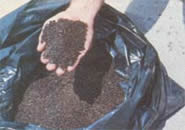
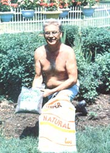
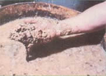
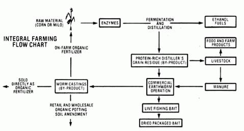
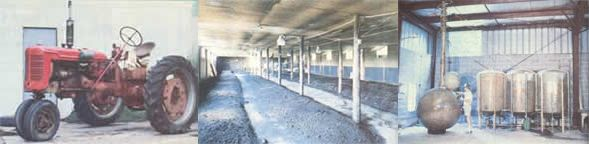
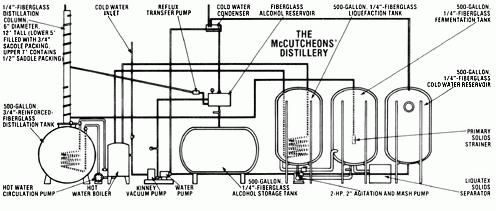

An innovative Missourian shows us it's possible to achieve...
It doesn't take a soothsayer to figure out that the role petroleum-based fuels have played in our society is going to change. Political unrest abroad, dwindling crude reserves here at home, and the ever-rising cost of locating, unearthing, and processing "black gold" (not to mention the environmental price we pay as a result of both retrieving and using the fuel) should all serve as weather vanes to indicate that humankind must start using alternative forms of energy now to avoid getting caught short in the future.
And, naturally, it is necessary that such changes be made by governments and individuals alike. MOTHER recently visited one "little guy" who's seen the handwriting on the wall (and has chosen to do something about it), Charles E. McCutcheon, Jr. of Fayette, Missouri. Charlie, together with his sons and a long-time employee, operates McCutcheon's Midwest Miracle Products, a small manufacturing firm in the Show Me State's agricultural heartland.
The business - although modest - is a surprisingly diversified one. In effect, the McCutcheons have worked out a well-balanced integrated plan that might provide a valuable example for folks who want to protect their farms or homesteads from the food, fuel, fertilizer, and economic shortages that are sure to become worse as time goes on.
Charlie refers to his system for self-sufficiency as "energy-protein-nitrogen independence" . . . and for a good reason. Briefly, here's how it works: A large part of the McCutcheons' operation involves high quality, family-built ethanol distillation equipment . . . that's been designed to operate at a much greater level of energy efficiency than does a conventional still of comparable size, because it functions within a vacuum. (See the sidebar accompanying this article for a detailed explanation of the McCutcheon fuel distillery.) Therefore, Charlie uses less thermal energy than would normally be required for alcohol production. (A mere 130°F will keep his distillation column in operation!)
Using his low-energy distillation apparatus, Mr. McCutcheon converts local grain produce (either corn or milo) into 160-180 proof alcohol fuel for use in his tractors, trucks, and other farm equipment . . . and has the additional option (because of the new federal legislation governing the production of ethanol fuels, discussed in MOTHER NO. 65, on page 116) of selling any excess for a comfortable profit.
But McCutcheon's concept of integrated farming for self-sufficiency involves more than simply producing fuels. In order to manufacture ethanol at a reasonable cost, one must take full advantage of the value of the process's by-product . . . the leftover distiller's grains. Normally, such protein-rich remains (which usually total about one-third of the raw materials' original weight) can be sold outright as a livestock feed supplement or used directly on the farm for the same purpose. Charles, however, employs the residue to produce a sizable "crop" of earthworms!
How, you may ask, do the worms fit into the cycle? Well, Charlie maintains that the wigglers are absolutely essential to his operation. "In order to be self-sufficient for any amount of time, one must plan for the production of organic fertilizers for his or her farm's soil. With superior organic soil nutrients like the earthworms' manure - which is referred to as castings in the trade - I have a totally integrated farming cycle. By using the manure from worms rather than from livestock to fertilize our land, we're not only providing humus to the earth . . . we're adding - nitrogen in its valuable nitrate form - as well, along with phosphorus, magnesium, potash, and calcium!"
Better yet, it's not essential that the crawlers feed on the distiller's by-product. If, for some reason, McCutcheon chooses to divert the majority of his processed grain residue to some use other than worm food - such as to provide supplemental protein for his livestock - he can easily use the manure from the farm animals to nourish his worm stock with equal success (although the harvesting techniques vary when manure alone is used).
And the slender subterraneans provide a lot more than fertilizer! The Missourians raise the popular hybrid redworm, which is a type of manure worm that's easily adaptable to commercial production and excellent for use as live fishing bait. Charlie started growing the "red wigglers" in 1976, with 400 pounds of breeding stock (small "bedrun-sized" worms) in a 4,000-square-foot hog confinement facility. By carefully controlling the moisture, food, and pH levels in the worms' environment, the McCutcheons expanded their stock to about 6,000 pounds . . . eventually adding 3,000 more square feet of concrete-floored bedding space.
The beds are each six feet wide, 100 feet long, and up to a foot deep. Six-year-old decayed sawdust (the family gets it free for the hauling), piled to a depth of about six inches, makes up the bottom of the beds. The wood chips are then covered with four inches or so of fresh cattle manure, which Charlie replaces every month. Given such a mixture of bedding and food, the worms will breed well - and gain weight rapidly - as long as a pH balance of 6.5 - 7.0 is sustained and the litter is kept moist by regular waterings (every other day or so).
To harvest a crop of the earth-eating soil rejuvenators, the McCutcheon clan merely set a layer of 1/4" hardware cloth on the surface of each bed, and cover the screening with three inches of rotted sawdust mixed with the moist by-product from the latest ethanol run. Because the high-protein grain residue is such excellent feed, the worms work their way past the mesh to feast on the fresh material above and are easily removed after about three days (which gives the slippery little critters plenty of time to "fatten up" for market, where they're worth about $4.00 per pound ).
Although Charles and his crew have realized excellent profits by selling their worms to live -bait dealers, they have at times been disappointed by the number of creatures lost as a result of temperature extremes and physical damage sustained during shipping.
To get around such problems, the senior McCutcheon developed a dehydrated redworm convenience bait last year, which he's now manufacturing and distributing across the country. "Miracle Bait Jerky" is sold in sealed pouches, each of which contains four 1/4" X 4" worm-meat strips. According to Charlie's son Chuck, the strips can be cut in half and "hooked" like alive worm. When they're placed in the water, they swell up and emit a natural scent. Chuck reports that the bait is very effective at enticing many types of freshwater fish. . . and, of course, it's far more convenient than are live worms.
Furthermore, the redworm business has resulted in another "spinoff" trade which has also proved itself to be a moneymaker. Since the bait operation has produced far more earthworm manure than Charles needs, he decided to sell his surplus castings to local gardeners.
The venture worked out so well that Charlie has recently begun to bag his own organic potting soil amendment - consisting of equal parts of Canadian sphagnum peat moss, decayed sawdust, and worm castings - for sale to wholesale and retail nurseries and plant shops. The sideline is both profitable and practical . . . since the McCutcheons need go no farther than 30 miles from home (to Columbia, Missouri) to dispose of their goods. (In fact, the demand for this earthy product has become so great that Charles may have to begin purchasing castings from other local worm-breeders to supplement his supply!)
Even the most cautious individuals would be forced to admit that Charlie McCutcheon has a good thing going - especially from a business standpoint - as a result of his integrated energy/agriculture setup. But even more important is the fact that the operation is versatile enough to work for just about anybody! Since the McCutcheons aren't professional farmers, they have the opportunity to market a good part of their product, material which a full-time "tiller of the soil" may choose to return to his or her acreage. Either way, though, the significant point to remember is that the entire operation is directed toward self-sufficiency . . . wholistic self-sufficiency at that!
As most of us have learned, the largest part of the cost of producing ethanol on the farm or at home can be the expense of the raw material used (unless of course spoiled, waste, or otherwise "useless" crops are available). And, often enough, the next "dearest" commodity is the fuel utilized to fire the cooker and the still . . . especially if the device is heated by a petroleum product.
Knowing this as well as the next person, Charlie McCutcheon set out to design a farm-sized alcohol fuel distillery - one that would use an absolute minimum of energy while in operation - and he's recently succeeded in doing just that!
The McCutcheon "brainchild" is a fiberglass-fabricated, 500-gallon-capacity still that operates under 26 inches of vacuum . . . a factor which allows it to work at a temperature of only 130 °F, as compared with the approximately 175°F that a distillery exposed to atmospheric pressure would have to achieve.
(Just as water boils at a higher temperature under pressure - as in the radiator of a car - the liquid takes less heat to achieve a boil within a vacuum . . . as little as 34°F under an absolute vacuum of 29.92 inches of mercury!)
Liquefaction, fermentation, and storage all take place separately within three 500-gallon, 1/4"-fiberglass tanks. Although the "cooking" vat isn't under vacuum pressure, Charles conserves a good deal of energy by violently agitating the mash, a process which allows him to maintain a maximum temperature of only 180°F during liquefaction.
To further improve the efficiency of his operation, Mr. McCutcheon uses a hardy imported yeast in his mash, which he claims can withstand as much as a 13% alcohol content, compared with the 8-10% that "normal" yeast can handle. The additional few percentage points of tolerance, of course, allow the tiny organisms to produce more distillable ethanol per batch of "beer".
After the liquid mash has been separated from the solid residue, it's drawn into the 6"-diameter and 12'-tall, fiberglass saddle-packed column at midpoint . . . where the distillation process actually begins. The 3/4" reinforced fiberglass "still" tank contains 165 feet of 1/2" copper coils, which heat the 175 gallons or so of beer that are kept in the container at all times.
The alcohol product, in vapor form, is then run through a cold water condenser, and collected in a fiberglass reservoir at a rate of 5 gallons per hour (still under vacuum) before being placed in a 500-gallon, 1/4"-fiberglass storage tank. (The reservoir is plumbed into the top of the distillation column to allow some of the high-proof alcohol product to recycle through the packing to complete the reflux process.)
Using his equipment as described, Charlie McCutcheon can manufacture 160 to 180-proof ethanol for a cost that has - according to the Show Me Stater - at times been as low as 38 cents a gallon!
EDITOR'S NOTE: Charlie McCutcheon can provide further information concerning any of his various "miracle" products to anyone who writes hire at McCutcheon's Midwest Miracle Marts, Dept. TMEN, Highway 5 at Lucky Street, Payette, Missouri 65248 (please include a self-addressed, stamped envelope).
|
STAFF PHOTOS Worm castings make excellent organic fertilizer... |
 Charlies's natural potting soil amendment. . |
 Protein-rich grain residue reserves as both a livestock feed supplement and an earthworm fodder. . . . |
|
 (LEFT) The McCutcheon's ethanol-powered tractor. . . (CENTER) The worm beds house about 6,000 pounds of ""red wigglers"". (RIGHT) The McCutcheons' alcohol distillation system. . . |
 |
 |
|
 |
|
|